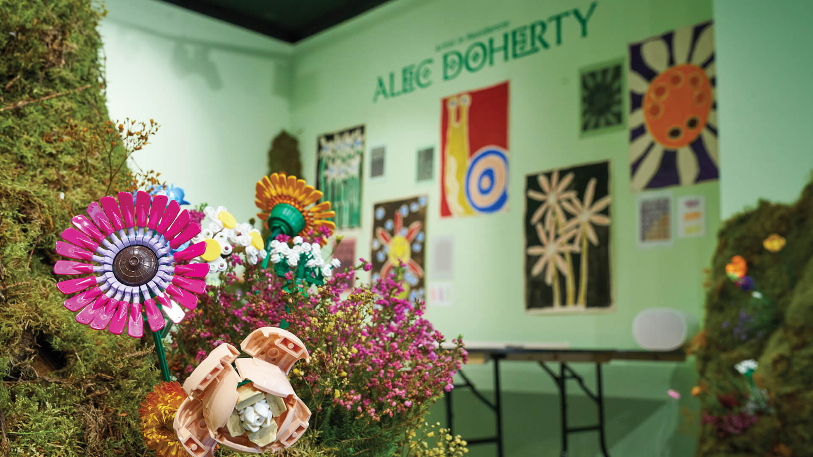
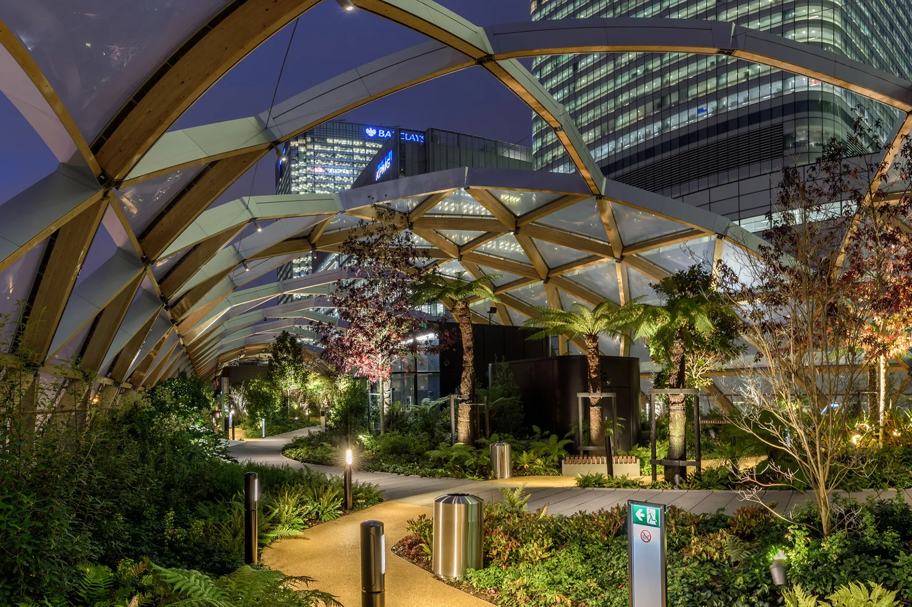
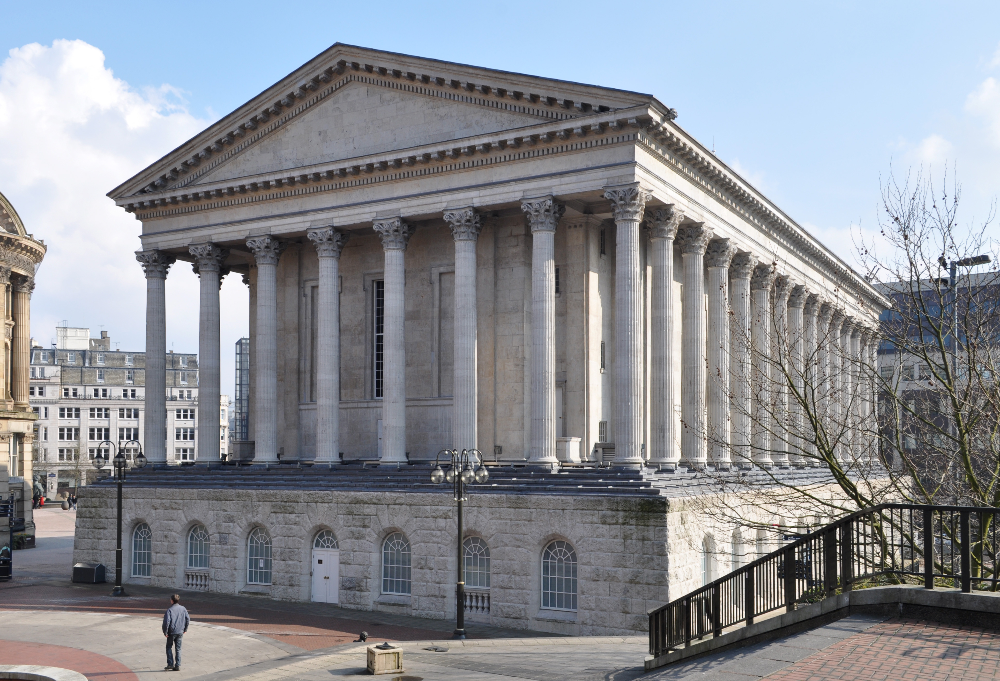

Plans For The Future
P.S scroll all the way down to see the links to return to the other pages
- Visit Underground Arcade!
- Visit London Design Festival!
- Visit London SkyLine Gardens For Free!
- Visit Chinatown!
- Town Hall Birmingham!
- Long Term Future Plans
- Visit Architecture Places Across The World Like Greece!
- Now You Pick!
- Homepage
- How We Met And Our Journey
Near Future Plans
Ive been here before and it was so amazing its a Underground arcade with a roller coaster inside of it there was so many games to play there and its located right next to camden market so we can have some nice food after too and we can do a competition to see who wins the most games heheheh I think the pics of this place I took are saved in our snap convo so if you want to see more about that place thats where you can find it.

This place is the London Design Festival and they hold a event yearly where you can make lego flowers and keep them I know you love legos and flowers so why not combine the too and have both! We can even make them now and have you take them home and put them up in the first building you create if thats something you want to do and in the future we can come back here make more and create a huge flower wall to put up in your office.

I knew you loved flowers and pretty nature and architecture too so I decided to find something that combined the too and its London Skline Gardens. These are skyscrapers that have free botanical gardens anyone can visit for no cost so it would be really fun to go out and eat some food look at skyscrapers then go up to the botanical gardens see all the pretty flowers there and enjoy the high rise view of London you can even say that us hanging out is a research project to see how modern skyscrapers have incorperated green spaces heheheh Heres a link to a website that talks all about them theres multiple so we can choose the best one and go there.

Not sure if this is a place you would want to go but from the looks of things it looks amazing I really like the chinese architecture everywhere and the red aesthetic along side the oppotunity to have really nice boba and good food I think it would be a great place to try!

I did not believe at all this existed in Birmingham but it does and so many more architecturely beautiful places my family goes some what regulary to Birmingham to see relatives so if you ever have a day free and would like to spend it with me lemme know! We can explore so many places like this in Birmingham but if anyone asks its for architecture research purposes hehehe.
Theres a whole world to explore so if were lucky and have careers that pay well we can have the freedom to travel and see all those amazing places first stop is definantly Greece youll love it and the food and weather is godly.
Here are some places we can go in the near future now its your turn to find some places too anything that catches your fancy let me know and ill put it up on your website doesnt matter if its in London or Birmingham :)